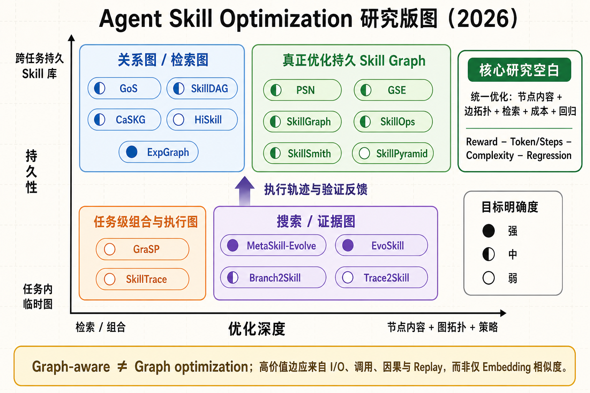
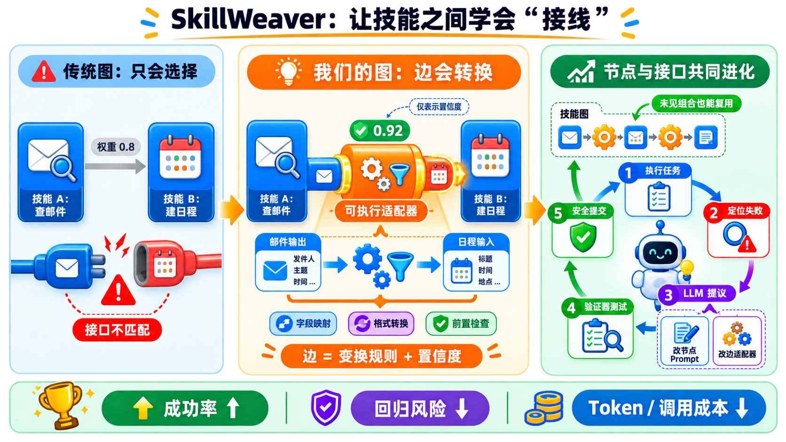

长期技能库
节点和关系会跨任务留下来。
8 分钟 · 看图读懂
Skill 是操作手册。优化，就是让手册越用越好。
01 · 什么是 Skill？
02 · 什么是优化？
03 · 为什么需要图？
查邮件之后，才能建日程。格式不匹配，还需要转换器。
04 · “用了图”不等于“优化了 Skill”
节点和关系会跨任务留下来。
任务结束，图通常也消失。
用来比较版本或寻找证据。
05 · 两轮调研的全景

06 · 最值得先记住的四篇
沿调用关系定位错误，再修改程序技能。
节点代码 ＋ 调用边同时改技能内容、依赖、共用与冲突。
内容 ＋ 关系 ＋ Replay增、并、拆、退技能，同时训练 Policy。
节点 ＋ 边 ＋ Policy发现冗余、接口冲突、风险和缺少验证。
健康度 ＋ 维护动作07 · “优化目标明确”是什么意思？
08 · 一个重要的负结果
如果边仍来自同一批 embedding 邻居，图只是在重复向量检索。
09 · 下一步研究可以做什么？

10 · 一句话带走
Graph-based Skill Optimization，是让手册、关系和使用方式一起变好。